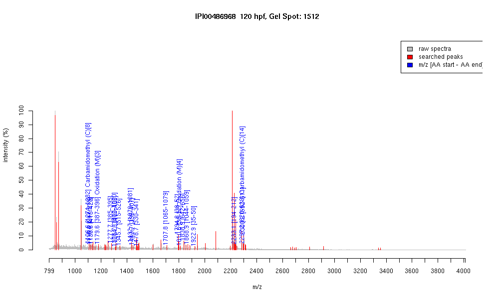

| Name | PREDICTED: similar to centromere protein F (350/400kD) |
|---|---|
| MW | 153194.1 |
| PI | 5.33 |
| Mascot Protein Score | 65 |
| Masses (matched / unmatched) | 19 / 55 |

| Peptide | MZ (calc) | MZ (observed) | Error (DA) | Error (PPM) | Start | Stop | Modifications |
|---|---|---|---|---|---|---|---|
| VSLEQENCK | 1106.5146 | 1106.5511 | 0.0365 | 33 | 1274 | 1282 | Carbamidomethyl (C)[8] |
| VKQEEIENK | 1116.5895 | 1116.6036 | 0.0141 | 13 | 907 | 915 | |
| LEKELEELK | 1130.6304 | 1130.5858 | -0.0446 | -39 | 415 | 423 | |
| TSMEIQQAKK | 1179.6038 | 1179.6049 | 0.0011 | 1 | 387 | 396 | Oxidation (M)[3] |
| NKTSMEIQQAK | 1277.6519 | 1277.7103 | 0.0584 | 46 | 385 | 395 | |
| LKQDFSLSENK | 1308.6794 | 1308.6627 | -0.0167 | -13 | 1080 | 1090 | |
| QNTEQILAKNR | 1314.7124 | 1314.7708 | 0.0584 | 44 | 476 | 486 | |
| VSSAQELENLKK | 1345.7322 | 1345.6722 | -0.06 | -45 | 515 | 526 | |
| LEVTTQEMIKLK | 1432.808 | 1432.7445 | -0.0635 | -44 | 1070 | 1081 | |
| KDHNVLQSEMDK | 1443.6897 | 1443.7161 | 0.0264 | 18 | 396 | 407 | |
| LKQVTEEMNCQR | 1478.709 | 1478.7216 | 0.0126 | 9 | 330 | 341 | |
| TASEKLEVTTQEMIK | 1707.8833 | 1707.8097 | -0.0736 | -43 | 1065 | 1079 | |
| QFQMDSLEATLQKQK | 1794.9055 | 1794.8202 | -0.0853 | -48 | 38 | 52 | |
| QFQMDSLEATLQKQK | 1810.9004 | 1810.8154 | -0.085 | -47 | 38 | 52 | Oxidation (M)[4] |
| VYEQLQQQFGETKIK | 1838.9646 | 1838.9165 | -0.0481 | -26 | 642 | 656 | |
| SLEEHISVLETELQNK | 1868.96 | 1868.9069 | -0.0531 | -28 | 1044 | 1059 | |
| QQKQFQMDSLEATLQK | 1922.964 | 1922.9191 | -0.0449 | -23 | 35 | 50 | |
| DIARQQTGSSIFPWQQDQK | 2233.0996 | 2233.1458 | 0.0462 | 21 | 194 | 212 | |
| DNLSNAHGELLVKCVELEEK | 2297.144 | 2297.1804 | 0.0364 | 16 | 620 | 639 | Carbamidomethyl (C)[14] |
| TENEQLINNAESNRNELLAK | 2300.1477 | 2300.1707 | 0.023 | 10 | 592 | 611 |